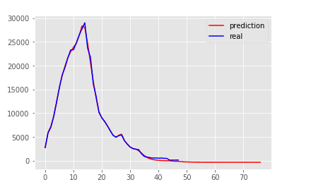
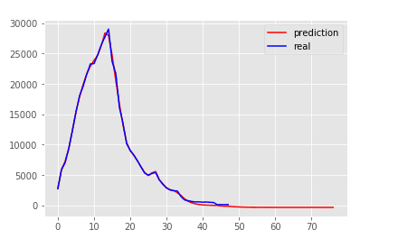
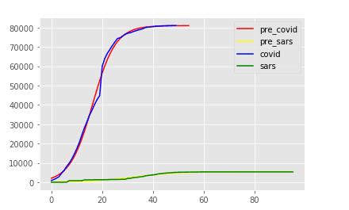
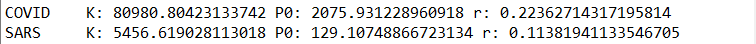
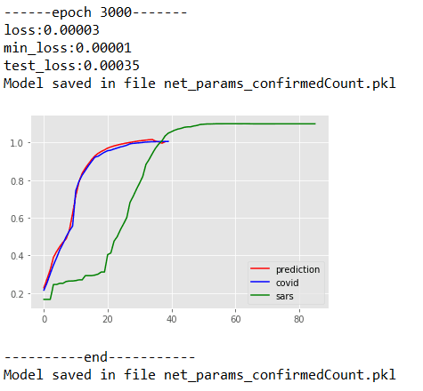
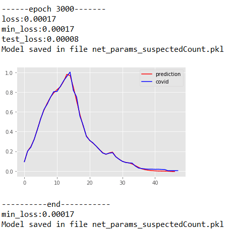
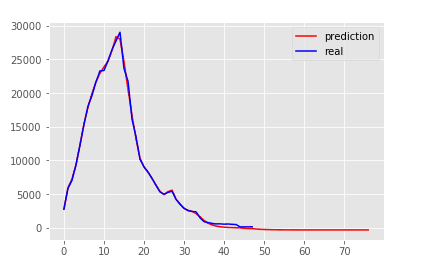

The coronavirus disease 2019 (COVID-19) outbreak originating in Wuhan, Hubei province, China, coincided with chunyun, the period of mass migration for the annual Spring Festival. To contain its spread, China adopted unprecedented nationwide interventions on January 23 2020. These policies included large-scale quarantine, strict controls on travel and extensive monitoring of suspected cases. However, it is unknown whether these policies have had an impact on the epidemic. I sought to show how these control measures impacted the containment of the epidemic. I also used an artificial intelligence (AI) approach, trained on the 2003 SARS data, to predict the epidemic.
the model is so complicated, so we use logistic function to simplify it. A logistic function or logistic curve is a common "S" shape (sigmoid curve), with equation: $$ f(x)=\frac{L}{1+e^{-k(x-x_0)}} $$ e = the nx0atural logarithm base (also known as Euler's number),
x0 = the x-value of the sigmoid's midpoint, L = the curve's maximum value, and k = the logistic growth rate or steepness of the curve.
Some may say people lives in different part, the must be simulated group by group, but I will say that, in large scale, the count will still present in the pattern of Logistic Function. So, We can aproximate our curve by using least squares method, here is what I approximated:  
Using the data of SARS_2013 and the approximated logistic function above, we can scale the dataset using the parameter in logistic function, and then predict the date by LSTM.I use privious 10 days to predict after 5 days, here comes my result: 
I also using LSTM to predict the suspected count. Since the dataset is small, I use privious 2 days to predict after 1 days, here comes my result: 
Written down as a set of equations, LSTMs look pretty intimidating. Hopefully, walking through them step by step in this essay has made them a bit more approachable. Using these LSTM Networks, I predict what the count will be looked like in next 30 days:

It is easy to find that, the confirmedcount grow very slowly in the next mounth, and the suspectedCount reach 0 at about 53 days(03/20/2020). Considering that the government's decision must be very careful, so they will observe the situation for a month. In conclusion, I thougth the start date of USTC is at 04/20/2020.